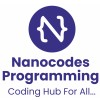

Gallery
Here, you would find a couple of my pictures across various activities and where I have worked.
Education
PhD in IT (Artificial Intelligence)
James Cook University
(June 2025 – April 2029) · Australia
Thesis: Leveraging Active and Passive Sensing Technologies for Real-Time Assessment and Triage of Maternal and Paternal Perinatal Mental Health Risks
Master of IT (Cloud Computing)
James Cook University
(May 2023 – April 2025) · Australia
Grade: Distinction (CGPA: 6.69 / 7.0)
Master of Engineering (Power Electronics & New Systems)
University of Nigeria, Nsukka
(Aug 2019 – July 2023) · Nigeria
Thesis: Development and Analysis of a Single-Phase, Five-Level F-Type Inverter
Grade: Distinction (CGPA: 4.83 / 5.0)
Bachelor of Engineering (Electronics Engineering)
University of Nigeria, Nsukka
(Sept 2011 – Aug 2017) · Nigeria
Thesis: Design and Implementation of an Improved Door Security System Using Fingerprint
Grade: Second Class Upper Division (2.1 Honours)
Work Experience
IT Support Engineer
Risk 2 Solution Group
(Apr 2025 – Present) · Brisbane, Queensland, Australia (Remote)
I currently support enterprise Microsoft 365 environments by managing SharePoint Online, Teams, and Office Online services. My responsibilities include providing tier-1 and tier-2 helpdesk support, troubleshooting system issues, managing user access via Active Directory, deploying new Microsoft 365 team sites, and documenting standard operating procedures. I work closely with senior engineers to implement scalable M365 solutions and improve cloud service delivery.
Machine Learning Engineer
 JutaLab
JutaLab
(Dec 2024 – Apr 2025) · Abuja, Nigeria (Remote)
Collected and prepared data from various sources to ensure quality and consistency for machine learning workflows. Analyzed large datasets to uncover trends and insights, developed and optimized predictive models (achieving 20% accuracy improvement), and created insightful reports and visualizations for non-technical audiences. Implemented MLOps practices for automated CI/CD deployment and streamlined model maintenance.
Fullstack & Mobile Developer

Nanocodes Programming
(Feb 2023 – Jan 2025) · Nigeria (Remote)
Developed web and mobile applications using React and Flutter, integrating secure RESTful APIs and backend databases for user authentication, session management, and real-time data retrieval. Designed relational and NoSQL schemas, built dynamic dashboards, and integrated Node.js backend services with PostgreSQL and MongoDB. Maintained Git-based CI/CD pipelines for smooth, scalable deployments.
Network Analyst Engineer
Globacom Telecommunications
(Nov 2021 – Jan 2023) · Nigeria (On-site)
Managed base station controllers and telecom equipment, ensuring optimal network performance and reducing downtime by 10%. Conducted detailed site audits, maintained regulatory compliance, analyzed network traffic, and implemented optimization strategies that improved data flow and increased capacity by 25%. Delivered detailed performance and revenue reports to senior management.
Software and Cloud Engineer
Nanocodes Programming
(Jul 2017 – Aug 2021) · Nigeria (On-site)
Developed cloud-based applications on AWS and Azure, ensuring scalability, security, and optimized performance. Designed mobile and web apps focused on cloud connectivity, achieving a 15% improvement in response times. Led programming workshops on Python, React, and cloud technologies, improving pass rates by 25% among 50+ students.
Teaching Assistant
University of Ibadan
(Aug 2019 – Jul 2020) · Ibadan, Oyo State, Nigeria (On-site)
I supported the course coordinator in delivering the TEL 231 – Applied Electricity course to 200-level students by enhancing course materials, grading assignments and exams, and providing supplementary tutorials. Additionally, I guided final-year students on their bachelor’s theses, assisting them in accessing relevant resources, identifying research gaps, and refining their study objectives under the course coordinator’s supervision.
System Administrator & IT Support
 JutaLab
JutaLab
(Jan 2014 – Dec 2014) · Abuja, Nigeria (On-site)
Delivered technical support to 100+ users, achieving a 95% first-call resolution rate. Conducted routine system maintenance, security checks, and network monitoring, reducing downtime by 20% and proactively identifying potential issues. Configured and managed IT infrastructure, including server deployment and network setup, enhancing overall performance and reducing risk exposure by 15%.
Skills
Programming: Python, React, Kotlin, C++, Dart, JavaScript
Frameworks: Django, Node.js, REST APIs
Cloud Platforms: AWS, Azure, Cloud Formation
ML & Data: TensorFlow, PyTorch, Scikit-learn, Power BI
Tools: LaTeX, OJS, MATLAB, Simulink, SQL/NoSQL
Awards & Scholarships
- 2025 JCU Postgraduate Research Scholarship
- 2024 International Student Excellence Award
- 2023 JCU International Excellence Scholarship
- 2016 JASSO Scholarship (Japan)
Professional Memberships
- Associate Member – Australian Computer Society (ACS #4381109)
- Member – Nigerian Society of Engineers (NSE #S20635)
- Council for the Registeration of Engineers in Nigeria – COREN (#R68938)
- International Association of Enginners (IAENG #509179)
Reviewer
- Journal of Electrical Engineering